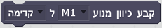

פקודות הרובוט
תיאור פקודות ההרחבה לרובוט
אירוע זה יופעל כאשר חיישן מגע/מגנטי/אור
המחובר בבקר לכניסת קלט אוניברסלי I1-I8 נלחץ/משוחרר או נסגר/נפתח
אירוע זה יופעל כאשר מספר הפולסים בקלט
המונה C1-C4 יהיה גבוה/נמוך יותר מאשר הערך המוזן
אירוע זה יופעל כאשר הערך של חיישן
הצבע/מרחק אולטרהסוניק/טמפרטורה/אור המחובר בבקר לכניסת קלט אוניברסלי
I1-I8 גבוה/נמוך יותר מאשר הערך המוזן
אחזר את ערכו של קלט המונה המחובר בכניסה
C1-C4 בבקר
בפקודה זו ניתן להשתמש לשם איחזור ערכו
של חיישן הצבע/מרחק אולטרהסוניק/טמפרטורה/אור המחובר בבקר לכניסת קלט
אוניברסלי I1-I8. יוחזר ערך של 16 ביט
בפקודה זו ניתן להשתמש לשם בדיקה האם
חיישן מגע/מגנטיות/מחסום אור המחובר בבקר לכניסת קלט אוניברסלי I1-I8
לחוץ/סגור כרגע. יוחזר ערך בוליאני
התחל לנגן את קובץ הסאונד 1-29 השמור בבקר
התחל לנגן את קובץ הסאונד 1-29 השמור
בבקר, והמתן עד לסיומו לפני המשך ביצוע שאר הפקודות
הגדר ערך לנורה המחוברת ליציאת פלט O1-O8
לערך שבין 0-8. אם הערך חורג מהגבולות הוא יקוצץ לגבול הקרוב
הגדר ערך ליציאת פלט O1-O8 לערך שבין
0-8. אם הערך חורג מהגבולות הוא יקוצץ לגבול הקרוב
אפס את ערכו של קלט המונה המחובר בכניסה
C1-C4 בבקר
עדכן את ערך המהירות של המנוע המחובר
ליציאת פלט M1-M4 לערך שבין 0-8. אם הערך חורג מהגבולות הוא יקוצץ לגבול
הקרוב
עדכן את ערכי הכיוון והמהירות של המנוע
המחובר ליציאת פלט M1-M4 .אם ערך המהירות חורג מהגבולות 0-8 הוא יקוצץ
לגבול הקרוב

עדכן את ערך הכיוון של המנוע המחובר
ליציאת פלט M1-M4
עדכן את ערכי הכיוון והמהירות של המנוע
המחובר ליציאת פלט M1-M4 והגדר את המרחק אותו יש לעבור. הדרך היחידה לעדכן
את המהירות בזמן הנסיעה למרחק שנקבע היא להשתמש בפקודת עצור מנוע לפני
הגדרה מחודשת של המהירות
עדכן את ערכי הכיוון והמהירות של 2
מנועים המחוברים ליציאות פלט M1-M4 .אם ערך המהירות חורג מהגבולות 0-8 הוא
יקוצץ לגבול הקרוב
עדכן את ערכי הכיוון והמהירות של 2
מנועים המחוברים ליציאות פלט M1-M4 והגדר את המרחק אותו יש לעבור. הדרך
היחידה לעדכן את המהירות בזמן הנסיעה למרחק שנקבע היא להשתמש בפקודת עצור
מנוע לפני הגדרה מחודשת של המהירות
עצור מנוע המחובר ליציאת פלט M1-M4
עדכן את סוג כניסת הפלט I1-I8 לאנלוגית
או דיגיטלית
אפס את הבקר - כל היציאות יעודכנו בערך 0